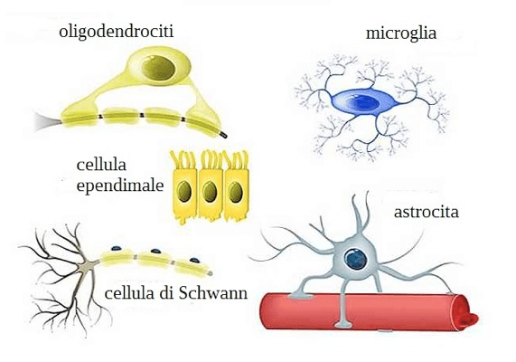

Le cellule gliali (o nevroglia) sono cellule del sistema nervoso che supportano, proteggono e nutrono i neuroni. Pur non trasmettendo impulsi nervosi, sono essenziali per il corretto funzionamento del cervello e del midollo spinale.
Si distinguono diversi tipi di cellule gliali, ciascuno con funzioni specifiche:
- Astrociti: regolano l’ambiente chimico intorno ai neuroni, forniscono sostanze nutritive e partecipano alla barriera emato-encefalica.
- Oligodendrociti (nel sistema nervoso centrale) e cellule di Schwann (nel periferico): producono la guaina mielinica, che isola gli assoni e aumenta la velocità di trasmissione degli impulsi nervosi.
- Microglia: agiscono come cellule immunitarie del cervello, difendendo da infezioni e ripulendo i detriti cellulari.
- Cellule ependimali: rivestono i ventricoli cerebrali e contribuiscono alla produzione del liquido cerebrospinale.
